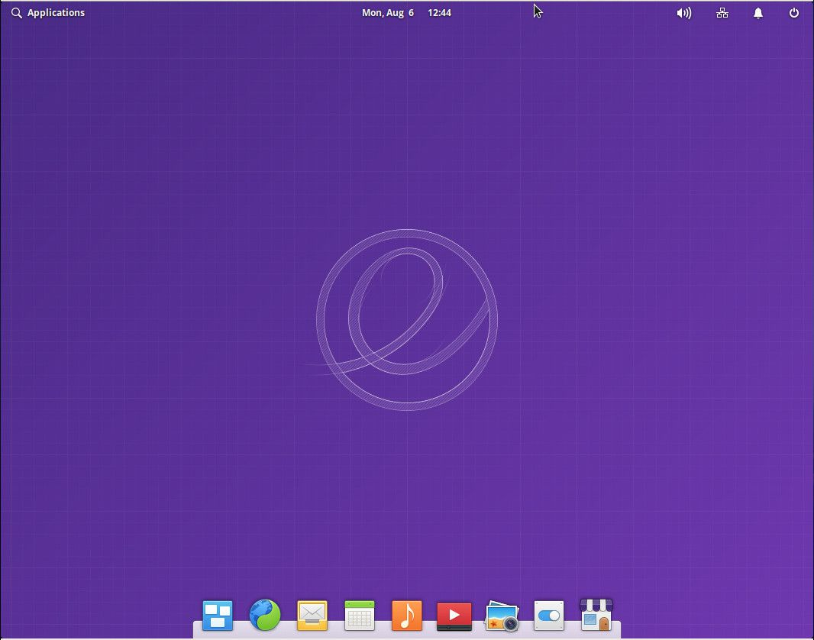
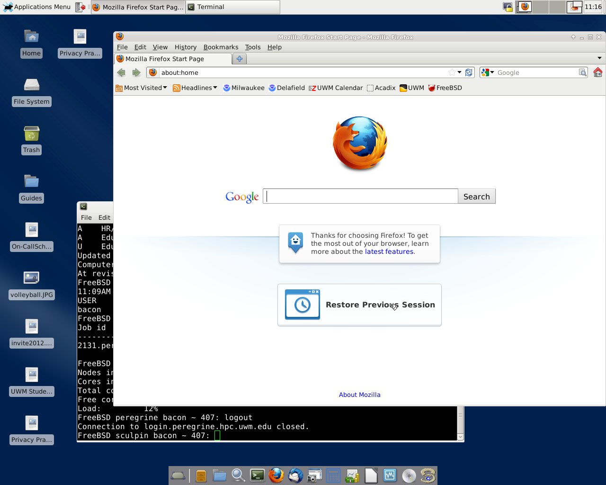

Az asztali Linux kifejezés azokra a speciális Linux disztribúciókra utal, melyek asztali felhasználók számára lettek tervezve. Az ilyen disztribúcióknál a grafikus felület és a felhasználói alkalmazások különösen fontos szerepet kapnak.
Vannak disztribúciók, melyek tartalmaznak minden asztali felhasználáshoz szükséges programot (de csak ezeket tartalmazzák), míg vannak olyanok is, melyeknél az adott platformra elérhető szinte összes program a telepíthető adathordozón megtalálható, így a felhasználó a telepítés folyamán választhat az asztali vagy a szerver operációs rendszer telepítése között.
Hagyományosan a Unix és Unix-szerű operációs rendszerek felhasználási területei a szerver, nagygépes rendszer, munkaállomások vállalati és tudományos környezetben. A 90-es évek elején azonban néhány Linux disztribútor – mint például a MandrakeSoft – elkezdte termékét reklámozni az átlag felhasználó számára.
Linux alapú operációs rendszerekre számos grafikus felület közül lehet választani. A legnépszerűbbek a
GNOME,
kde és az
Xfce. Ezek számos felhasználói programot is magukban foglalnak, nem úgy, mint az ablakkezelők - például az FVWM vagy az IceWM - melyek tényleg csupán csak ablakkezelők. Ezek az asztali környezetek számos beállítási lehetőséggel bírnak, így a felhasználók testre szabhatják. A Compiz segítségével 2D asztali környezet helyett 3D környezetet kaphat a felhasználó, mely segítségével például négy asztala lehet egy kocka négy oldalán.
Az linuxos asztali alkalmazások az X Window Systemet használják, így ennek előnyeit is élvezik. Ilyen például a másolás-kivágás és beillesztés: az egérrel kijelölt szöveg automatikusan másolva van, beilleszteni pedig a középső egérgombbal is lehetséges, így akár billentyűzet nélkül is elvégezhető ez a művelet.
2016 óta több program és asztali környezet igyekszik az új Wayland protokollt használni azzal a szándékkal, hogy a jövőben teljesen leváltsák vele az X-et. Ezt egyes felhasználók ideológiai okból nem támogatják, ezért a többi Unix-szerű rendszeren monopóliumot élvező X Window System nem fog eltűnni egyhamar. Az xWayland szerver segítségével X-hez íródott alkalmazások futtathatók Wayland-es környezetekenis. Linuxon a KDE Plasma, az Enlightenment és a GNOME teljesen támogatja a Waylandet; az útóbbiban az az alapértelmezett.
Az asztali Linux környezet fejlődésének köszönhetően ez a platform is egyre elterjedtebb.

